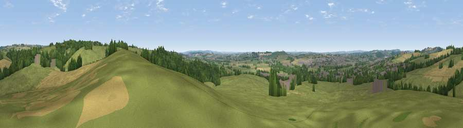

Viewpoint near Aston-by-Stone
#21414 in England · top 21% of its area beats it · near Aston-by-StoneWhere it is
The exact computed spot (SJ 92475 32825). Click the marker for map links.
The view, rendered

A 360° render of this exact spot computed from the terrain model, tree cover and land cover — summer colours, afternoon light, calibrated against photographs of famous viewpoints. Real trees, hedges and buildings will differ in detail.
The panorama
Grey silhouette: terrain skyline in each direction (720 bearings, Earth curvature and refraction included). Dashed green: skyline with trees (+15 m) and buildings (+8 m) as obstacles. Blue strip: how far the ground is visible on each bearing.
Where the view opens
Wedge length = distance to the farthest visible ground on that bearing (vegetation-aware). Rings at 10, 25 and 50 km.
What fills the view
57% grassland · 22% woodland · 15% cropland · 7% built-up
Angular shares of the visible panorama (visual magnitude), not map area. Landscape diversity 0.49 (0–1 Shannon).
Key numbers
More beautiful places nearby
The staircase of upgrades: each row has a higher view potential than everything closer. Driving times are estimates from straight-line distance, calibrated against real road routing — check an actual route before setting out.
| Place | Direction | Drive | Score |
|---|---|---|---|
| Viewpoint near Oulton | N · 1 km | ~4 min | 51.2 |
| Viewpoint near Moddershall | N · 3 km | ~6 min | 52.3 |
| Viewpoint near Oulton | NNW · 4 km | ~9 min | 55.2 |
| Peasley Bank | SW · 4 km | ~9 min | 57.2 |
| Viewpoint near Swynnerton | WNW · 8 km | ~16 min | 59.4 |
| Viewpoint near Beech | NW · 10 km | ~19 min | 62.9 |
| Viewpoint near Madeley Heath | NW · 19 km | ~33 min | 65.4 |
| Viewpoint near Madeley | NW · 20 km | ~34 min | 66.7 |
52.89282, -2.11329 · source: screening · position refined by local search. Computed location — check access rights before visiting.